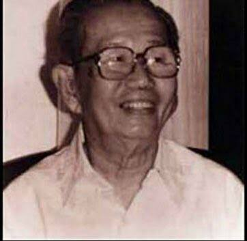

Sie Kong Lian lahir dan tumbuh dalam lingkungan masyarakat Tionghoa di
Batavia. Beliau dikenal sebagai seorang pengusaha sukses yang bergerak
di bidang jual beli kasur kapuk dengan toko utama di daerah Segitiga
Senen, serta merambah ke bisnis properti dan peminjaman rumah pondokan
(indekos).
Meskipun bukan seorang politisi atau orator, ia
memiliki kepedulian sosial yang tinggi. Hubungan eratnya dengan para
mahasiswa pergerakan diwariskan kepada keturunannya. Pada tahun 2018,
pihak keluarga (cucu dan cicitnya) menyerahkan bukti akta waris asli
untuk meluruskan sejarah nama beliau yang selama puluhan tahun salah
tertulis di buku sejarah.